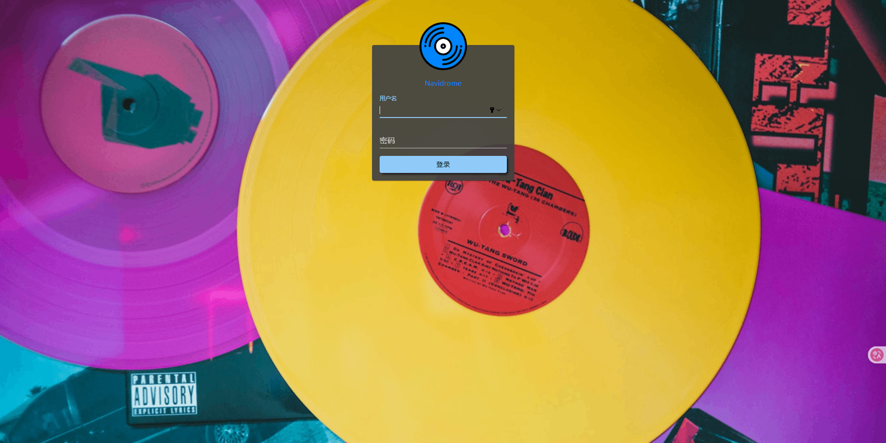
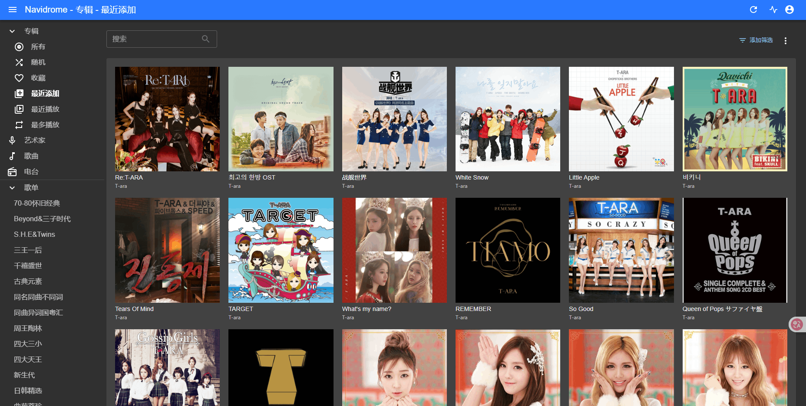
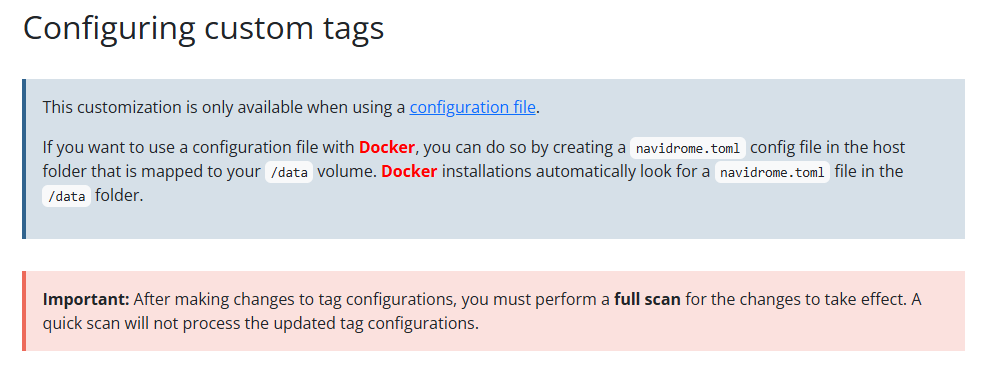
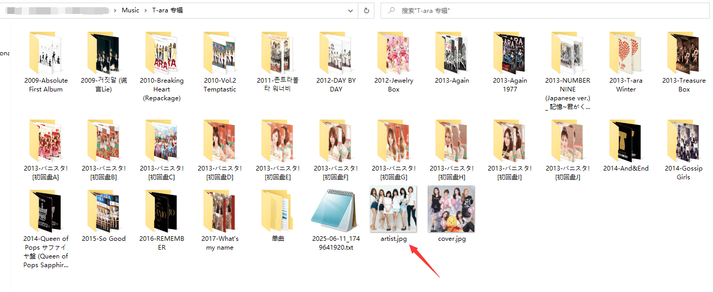
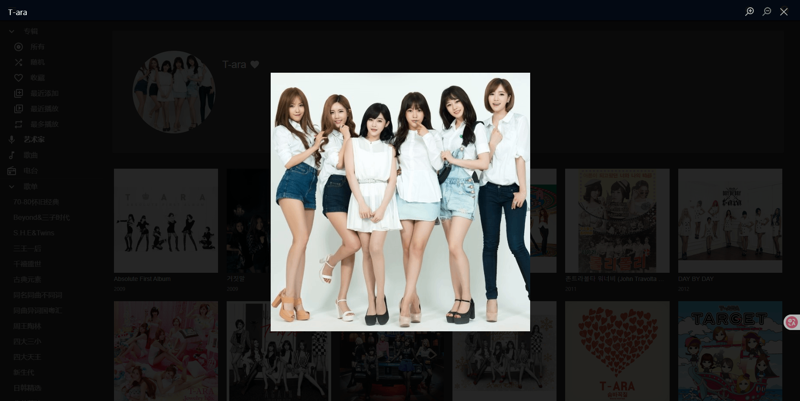
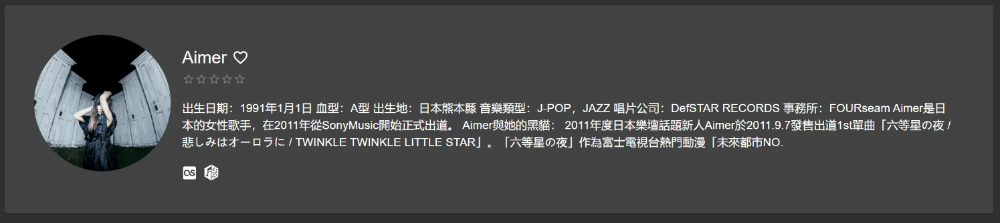
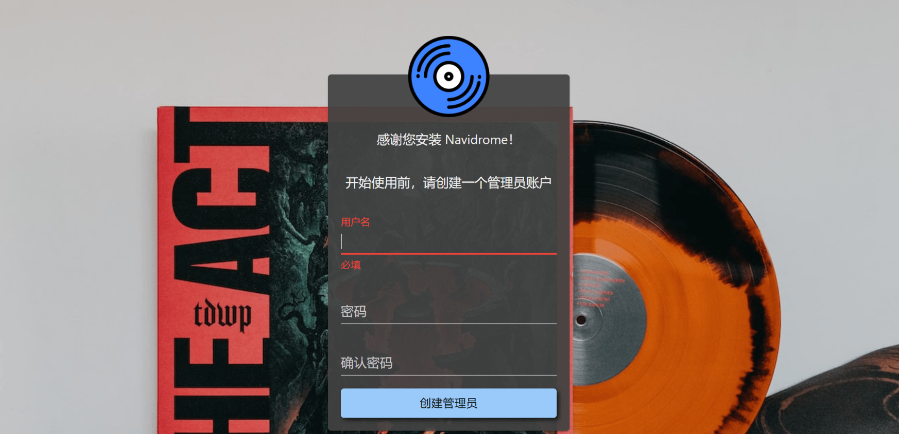
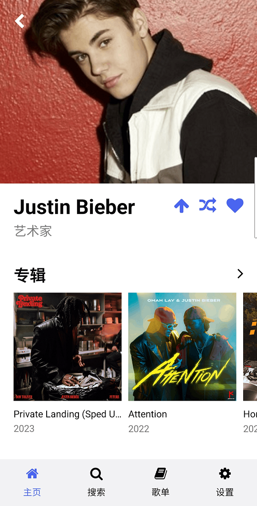

Version：Navidrome 0.55.2

# 介绍
Navidrome 是一款开源的、轻量级的、自托管的音乐服务器，兼容 Subsonic API，可以通过网页或客户端应用访问和播放音乐。
特点：
- 处理超大音乐收藏
- 几乎可串流任何音频格式
- 读取并使用所有精心策划的元数据
- 对合集（Various Artists 专辑）和盒装（多碟专辑）的强大支持
- 多用户，每个用户都有自己的播放次数、播放列表、收藏夹等。
- 资源使用率极低
- 多平台，可在 macOS、Linux 和 Windows 上运行。还提供 Docker 映像
- 所有主要平台（包括 Raspberry Pi）的二进制文件均可随时使用
- 自动监控资料库变化，导入新文件并重新加载新元数据
- 基于 Material UI 的可主题化、现代化和响应式网络界面
- 与所有 Subsonic / Madsonic / Airsonic 客户端兼容
- 即时转码可按用户 / 播放器设置。支持 Opus 编码
- 翻译成各种语言

# 安装
创建 navidrome 数据文件夹及音乐存放位置：
# $PATH 为你的相册存放路径 | ||
mkdir -p /app/navidrome/data | ||
mkdir -p /<$PATH>/music | ||
cd /app/navidrome |
添加 docker-compose.yml 配置文件：
touch docker-compose.yml |
写入：
services: | |
navidrome: | |
image: deluan/navidrome:latest | |
hostname: navidrome | |
container_name: navidrome | |
user: 0:0 # should be owner of volumes | |
ports: | |
- "4533:4533" | |
restart: always | |
networks: | |
- network | |
environment: | |
# Optional: put your config options customization here. Examples: | |
ND_SCANNER_ENABLED: "false" | |
ND_SCANNER_SCHEDULE: "@weekly" | |
ND_LOGLEVEL: info | |
ND_SESSIONTIMEOUT: 12h | |
ND_BASEURL: "" | |
ND_DEFAULTLANGUAGE: "zh-Hans" | |
ND_LASTFM_ENABLED: "false" | |
ND_LISTENBRAINZ_ENABLED: "false" | |
ND_ENABLEDOWNLOADS: "false" | |
ND_ENABLEFAVOURITES: "true" | |
ND_ENABLESHARING: "false" | |
ND_ENABLESTARRATING: "false" | |
ND_ENABLETRANSCODINGCONFIG: "true" | |
ND_TRANSCODINGCACHESIZE: "400MB" | |
ND_IMAGECACHESIZE: "100MB" | |
ND_SCANNER_ARTISTJOINER: "&" | |
volumes: | |
- "/app/navidrome/data:/data" | |
- "/<$PATH>/music:/music:ro" | |
networks: | |
network: | |
driver: bridge |
修改完成后，使用以下命令进行部署：
docker-compose up -d |
# 主要参数说明
关于环境变量：
ND_SCANNER_ENABLED：该字段用于是否启用计划扫描功能，默认是不开启，如果设为true，那么将根据ND_SCANNER_SCHEDULE字段参数进行定时扫描。ND_SCANNER_SCHEDULE：通过 Cron 语法定义自动扫描的时间，可以利用 https://crontab.guru/ 生成你所需的计划时间。ND_LOGLEVEL：如其名，用于记录调试信息的等级，支持error,warn,info,debug,trace。ND_SESSIONTIMEOUT：用于设置 web UI 登录后无操作的退出时间。ND_BASEURL：该字段用于配置 navidrome 的代理地址，不需要则为空。ND_DEFAULTLANGUAGE：设置默认登录 web UI 时所显示的语言文本，支持语言可看 resources/i18n ；对于中文语言有简体和繁体之分，所以要明确格式，eg：中文简体 -zh-Hans，而中文繁体则为zh-Hant。ND_LASTFM_ENABLED：是否需要集成 Last.fm，一般用来获取艺人信息，默认打开，如果使用则需要配置ND_LASTFM_APIKEY、ND_LASTFM_SECRET。由于 Last.fm 是在国外架设服务器，国内访问时常抽风，因此建议关闭。ND_LISTENBRAINZ_ENABLED：是否需要集成 Listen Brainz，用于补全专辑 / 歌曲信息、封面信息等标签信息，默认打开；可用ND_LISTENBRAINZ_BASEURL字段覆盖 Listen Brainz 默认地址，例如使用镜像 Listen Brainz 替代。由于 Listen Brainz 是在国外架设服务器，国内访问时常抽风，因此建议关闭。ND_ENABLEDOWNLOADS：是否允许从 Web 界面下载音乐 / 专辑 / 播放列表，建议关闭，默认打开。ND_ENABLEFAVOURITES：是否允许从 Web 界面星标或收藏 歌曲 / 专辑 / 艺术家。ND_ENABLESHARING：是否允许创建分享链接。ND_ENABLESTARRATING：是否在 Web 界面启用 5 星评分机制。ND_ENABLETRANSCODINGCONFIG：是否允许在 Web 界面修改转码设置。ND_TRANSCODINGCACHESIZE：用于设置转码缓存大小，设为 0 时禁用转码缓存，默认为 100MB。ND_IMAGECACHESIZE：用于设置媒体图像缓存大小，设为 0 时禁用媒体图像缓存，默认为 100MB。ND_SCANNER_ARTISTJOINER：当存在多个艺术家时，用于界分每个艺术家，而分割的字符则由该字段控制。
关于多个艺术家显示：
在 Configuring custom tags 中有提到：

因此，除了上面的 ND_SCANNER_ARTISTJOINER 字段能定义总的艺术家切割字符外，还可以自定义详细的不同分类的切割字符，因此，我们可以在 navidrome.toml 文件中编写需要的信息：
vim /app/navidrome/data/navidrome.toml
写入：
Tags.Artist.Split = ["/", " / ", " feat. ", "feat.", " feat ", " ft. ", " ft ", "; ", "&"] | |
Tags.Roles.Split = ["/", ";", "&"] |
Tags.Artist.Split：表示存在多个艺术家 / 专辑艺术家时，所识别分割的匹配字符。Tags.Roles.Split：表示除了Tags.Artist.Split定义的艺术家和专辑艺术家以外的，所有剩余的作词家、作曲家以及编曲家等存在多个时，其所匹配分割的字符。
如果容器启动后找不到 navidrome.toml 文件识别，可以在 ND_CONFIGFILE 字段中指定位置（该字段默认为 "./navidrome.toml" ）。
note：
关于其它的变量属性可以参看官方说明：https://www.navidrome.org/docs/usage/configuration-options/#environment-variables
关于加载外部配置属性参数可看：https://github.com/navidrome/navidrome/blob/master/resources/mappings.yaml
# 音乐库分类管理
通常情况下音乐库的结构分类应该是：
.
|-- Artist A
| |-- Albums A
| | |-- Music A
| | |-- Music B
| | |-- ......
| | `-- Music n
| |-- Albums B
| | |-- Music A
| | |-- Music B
| | |-- ......
| | `-- Music n
| |-- ......
| `-- Albums n
| |-- Music A
| |-- Music B
| |-- ......
| `-- Music n
|-- Artist B
| |-- Albums A
| | |-- Music A
| | |-- Music B
| | |-- ......
| | `-- Music n
| |-- Albums B
| | |-- Music A
| | |-- Music B
| | |-- ......
| | `-- Music n
| |-- ......
| `-- Albums n
| |-- Music A
| |-- Music B
| |-- ......
| `-- Music n
|-- ......
`-- Artist n
|-- Albums A
| |-- Music A
| |-- Music B
| |-- ......
| `-- Music n
|-- Albums B
| |-- Music A
| |-- Music B
| |-- ......
| `-- Music n
|-- ......
`-- Albums n
|-- Music A
|-- Music B
|-- ......
`-- Music n
由于在部署 navidrome 的时候没有集成 lastfm, spotify, deezer 组件，因此，在查看艺术家的时候是没有相应的图片的，所以你可以在你的对应艺术家分类目录下放置艺术家图片即可显示，图片命名以 ND_ARTISTARTPRIORITY 字段的参数为匹配项，默认为 "artist.*, album/artist.*, external" ；
eg：
在目录下放置 artist.jpg 艺术家封图：

在查看对应 artist 显示，可以看到已经识别导入了（需要完全扫描一次）：

而对于 artist 本地传记显示，目前版本还不支持，但已经有需求提出了，具体可看 https://github.com/navidrome/navidrome/issues/961 ；当然，如果对自己网络访问国外服务器有信心的，可以启用 ND_LASTFM_ENABLED or ND_SPOTIFY_ID 项，即可实现 artist 封图和简介等相关信息：

# 使用
浏览器访问 http://localhost:4533 ，首次进入需要设置账号密码：

# 音乐标签信息
对于歌曲的标签信息写入，只要符合常规的 "ID3Tags" 都能读取，像中文这种，推荐使用 "ID3v2.3 UTF-16" 格式。关于 navidrome 中定制的 tag，可以参看：https://www.navidrome.org/docs/usage/tagging-guidelines/
# 安可
Navidrome 除了网页界面，还支持各种第三方客户端：
- iOS: play:Sub, substreamer, Amperfy and iSub
- Android: Tempo, Castafiore, DSub, Subtracks, substreamer, Ultrasonic, Audinaut and 音流
- Web: Subplayer, Airsonic Refix, Aurial, Jamstash and Subfire
- Desktop: Sublime Music (Linux) and Sonixd (Windows/Linux/macOS)
- CLI: Jellycli (Windows/Linux) and STMP (Linux/macOS)
- Connected Speakers:
- Sonos: bonob
- Alexa: AskSonic
- Other:
- Subsonic Kodi Plugin
- Navidrome Kodi Plugin
- HTTPDirFS
在这里，安卓手机客户端可以尝试使用 Temop 或 Castafiore，当然还有其它的，具体哪个好用、谁才适合，则看自己的使用需求了。
下面为 Tempo 的使用界面：

Castafiore 使用界面：
